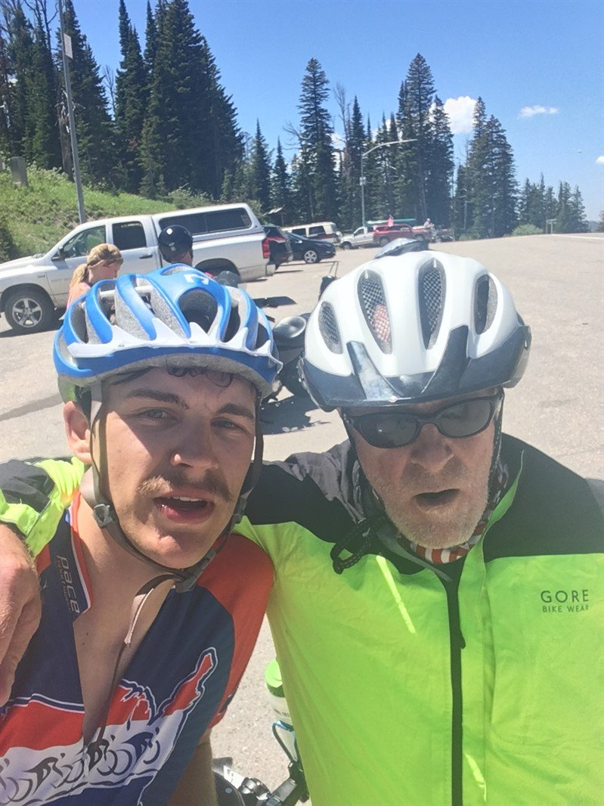

This ride is Chris’ pledge to cure 60 people of sight loss a day for 60 consecutive days at the age of 60. Chris suffers from a rare form of degenerative sight loss and was registered blind at the age of 18. He has spent his career as an engineer, business executive and entrepreneur working with digital technology. He is currently a Venture Partner at Entrepreneur First.
In earlier years Chris competed in various sports including captaining the British Disabled Waterski team to victory in 3 world championships.
Chris undertook his first long distance cycle ride in 2012 from Lands End to John o’Groats (end to end across the UK) covering 100 miles a day for 10 consecutive days.
In 2014 Chris was awarded a CBE in the New Years Honours list. He is passionate about digital skills education and is a Trustee of the Raspberry Pi Foundation.